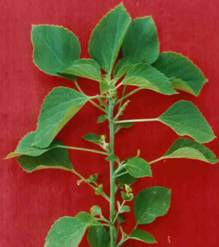
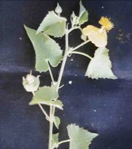

AGRO 304 :: Lecture 02 :: CLASSIFICATION OF WEEDS

Out of 2, 50,000 plant species, weeds constitute about 250 species, which are prominent in agricultural and non-agricultural system. Under world conditions about 30000 species is grouped as weeds.
I. Based on life span
Based on life span (Ontogeny), weeds are classified as Annual weeds, Biennial weeds and Perennial weeds.
a. Annual Weeds
Weeds that live only for a season or a year and complete their life cycle in that season or year are called as annual weeds.
These are small herbs with shallow roots and weak stem. Produces seeds in profusion and the mode of propagation is commonly through seeds. After seeding the annuals die away and the seeds germinate and start the next generation in the next season or year following.
Most common field weeds are annuals. The examples are
a. Monsoon annual
Commelina benghalensis, Boerhavia erecta
b. Winter annual
Chenopodium album
Commelina benghalensis |
|
|
b. Biennials
It completes the vegetative growth in the first season, flower and set seeds in the succeeding season and then dies. These are found mainly in non-cropped areas.
Eg. Alternanthera echinata, Daucus carota
(c) Perennials
Perennials live for more than two years and may live almost indefinitely. They adapted to withstand adverse conditions. They propagate not only through seeds but also by underground stem, root, rhizomes, tubers etc. And hence they are further classified into
i. Simple perennials: Plants propagated only by seeds. Eg. Sonchus arvensis
ii. Bulbous perennials: Plants which possess a modified stem with scales and reproduce mainly from bulbs and seeds. Eg. Allium sp.
iii. Corm perennialsb Plants that possess a modified shoot and fleshy stem and reproduce through corm and seeds. Eg. Timothy (Phleum pratense)
Sonchus arvensis |
|
iv. Creeping perennials: Reproduced through seeds as well as with one of the following.
- Rhizome: Plants having underground stem – Sorghum halapense
- Stolon: Plants having horizontal creeping stem above the ground – Cynodon dactylon
|
|
- Roots: Plants having enlarged root system with numerous buds – Convolvulus arvensis
- Tubers: Plants having modified rhizomes adapted for storage of food – Cyperus rotundus
|
|
II. Based on ecological affinities
a. Wetland weeds
They are tender annuals with semi-aquatic habit. They can thrive as well under waterlogged and in partially dry condition. Propagation is chiefly by seed. Eg. Ammania baccifera, Eclipta alba
|
|
b. Garden land weeds (Irrigated lands)
These weeds neither require large quantities of water like wetland weeds nor can they successfully withstand extreme drought as dryland weeds. Eg.Trianthema portulacastrum, Digera arvensis
|
|
c. Dry lands weeds
These are usually hardy plants with deep root system. They are adapted to withstand drought on account of mucilaginous nature of the stem and hairiness. Eg. Tribulus terrestris, Argemone mexicana.
|
|
III. Based on soil type (Edaphic)
(a) Weeds of black cotton soil: These are often closely allied to those that grow in dry condition. Eg., Aristolochia bracteata
(b) Weeds of red soils: They are like the weeds of garden lands consisting of various classes of plants. Eg. Commelina benghalensis
(c) Weeds of light, sandy or loamy soils: Weeds that occur in soils having good drainage. Eg. Leucas aspera
(d) Weeds of laterite soils: Eg. Lantana camara, Spergula arvensis
|
|
|
|
IV. Based on place of occurrence
(a) Weeds of crop lands: The majority of weeds infests the cultivated lands and cause hindrance to the farmers for successful crop production. Eg. Phalaris minor in wheat
(b) Weeds of pasture lands: Weeds found in pasture / grazing grounds. Eg. Indigofera enneaphylla
|
|
(c) Weeds of waste places: Corners of fields, margins of channels etc., where weeds grow in profusion. Eg. Gynandropsis pentaphylla, Calotropis gigantea
|
|
(d) Weeds of playgrounds, road-sides: They are usually hardy, prostrate perennials, capable of withstanding any amount of trampling. Eg. Alternanthera echinata, Tribulus terestris
V. Based on Origin
(a) Indigenous weeds: All the native weeds of the country are coming under this group and most of the weeds are indigenous. Eg. Acalypha indica, Abutilon indicum
 |
 |
(b) Introduced or Exotic weeds: These are the weeds introduced from other countries. These weeds are normally troublesome and control becomes difficult. Eg. Parthenium hysterophorus, Phalaris minor, Acanthospermum hispidum
|
|
VI. Based on cotyledon number
Based on number of cotyledons it possess it can be classified as dicots and monocots.
(a) Monocots Eg. Panicum flavidum, Echinochloa colona
(b) Dicots Eg. Crotalaria verucosa, Indigofera viscosa
|
|
VII. Based on soil pH
Based on pH of the soil the weeds can be classified into three categories.
(a) Acidophile – Acid soil weeds eg. Rumex acetosella
(b) Basophile – Saline & alkaline soil weeds eg. Taraxacum sp.
(c) Neutrophile – Weeds of neutral soils eg Acalypha indica
|
|
VIII. Based on morphology
Based on the morphology of the plant, the weeds are also classified in to three categories. This is the most widely used classification by the weed scientists.
(a) Grasses: All the weeds come under the family Poaceae are called as grasses which are characteristically having long narrow spiny leaves. The examples are Echinocloa colonum, Cynodon dactylon.
(b) Sedges: The weeds belonging to the family Cyperaceae come under this group. The leaves are mostly from the base having modified stem with or without tubers. The examples are Cyperus rotundus, Fimbrystylis miliaceae.
(c) Broad leaved weeds: This is the major group of weeds as all other family weeds come under this except that is discussed earlier. All dicotyledon weeds are broad leaved weeds. The examples are Flavaria australacica, Digera arvensis, Tridax procumbens
Cynodon dactylon |
|
|
IX. Based on nature of stem
Based on development of bark tissues on their stems and branches, weeds are classified as woody, semi-woody and herbaceous species.
(a) Woody weeds: Weeds include shrubs and undershrubs and are collectively called brush weeds. Eg. Lantana camera, Prosopis juliflora
(b) Semi-woody weeds: eg.Croton sparsiflorus
(c) Herbaceous weeds: Weeds have green, succulent stems are of most common occurrence around us. Eg. Amaranthus viridis
Prosopis juliflora |
|
|
X. Based on specificity
Besides the various classes of weeds, a few others deserve special attention due to their specificity. They are, a. Poisonous weeds, b. Parasitic weeds and c. Aquatic weeds.
a. Poisonous weeds
The poisonous weeds cause ailment on livestock resulting in death and cause great loss. These weeds are harvested along with fodder or grass and fed to cattle or while grazing the cattle consume these poisonous plants. Eg. Datura fastuosa, D. stramonium and D. metal are poisonous to animals and human beings. The berries of Withania somnifera and seeds of Abrus precatorius are poisonous.
Datura metal |
|
|
b. Parasitic weeds
The parasite weeds are either total or partial which means, the weeds that depend completely on the host plant are termed as total parasites while the weeds that partially depend on host plant for minerals and capable of preparing its food from the green leaves are called as partial parasites. Those parasites which attack roots are termed as root parasites and those which attack shoot of other plants are called as stem parasites. The typical examples are;
- Total root parasite – Orabanche cernua on Tobacco
- Partial root parasite - Striga lutea on sugarcane and sorghum
|
|
- Total stem parasite - Cuscuta chinensis on leucerne and onion
- Partial stem parasite - Loranthus longiflorus on mango and other trees.
|
|
c. Aquatic weeds:
Unwanted plants, which grow in water and complete at least a part of their life cycle in water are called as aquatic weeds. They are further grouped into four categories as submersed, emersed, marginal and floating weeds.
1. Submersed weeds:These weeds are mostly vascular plants that produce all or most of their vegetative growth beneath the water surface, having true roots, stems and leaves. Eg. Utricularia stellaris, Ceratophyllum demersum.
Utricularia stellaris |
|
2. Emersed weeds:These plants are rooted in the bottom mud, with aerial stems and leaves at or above the water surface. The leaves are broad in many plants and sometimes like grasses. These leaves do not rise and fall with water level as in the case of floating weeds. Eg. Nelumbium speciosum, Jussieua repens.
Nelumbium speciosum |
|
3. Marginal weeds:Most of these plants are emersed weeds that can grow in moist shoreline areas with a depth of 60 to 90 cm water. These weeds vary in size, shape and habitat. The important genera that comes under this group are; Typha, Polygonum, Cephalanthus, Scirpus, etc.
Typha sp. |
|
4. Floating weeds:These weeds have leaves that float on the water surface either singly or in cluster. Some weeds are free floating and some rooted at the mud bottom and the leaves rise and fall as the water level increases or decreases. Eg. Eichhornia crassipes, Pistia stratiotes, Salvinia, Nymphaea pubescens.
Eichhornia crassipes |
|
| Download this lecture as PDF here |